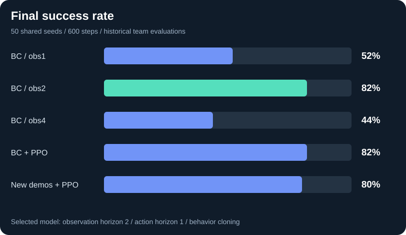
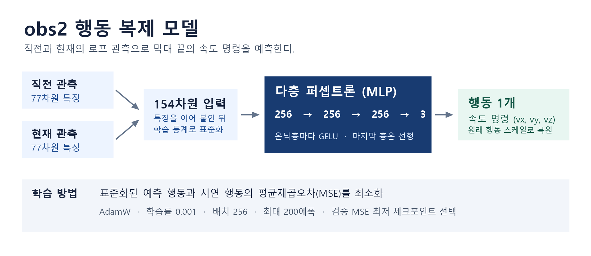
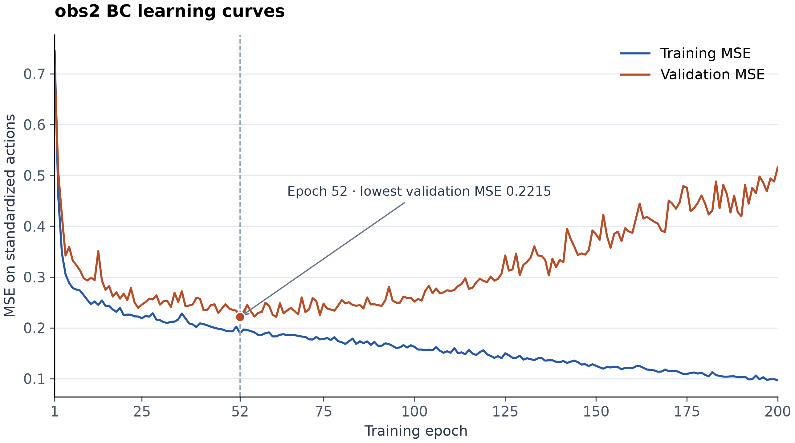

SOOKMYUNG · DEEP LEARNING · TEAM 3 · M3Learning to Shape a Rope
사람의 시연에서 배운 MLP로 로프를 목표 T 모양에 정렬하는 행동 복제 프로젝트.
82%최종 성공 · 41/50
+30%p관측 창 1 → 2
73선별 시연 에피소드
결과로 선택한 최종 모델

이전·현재 관측을 함께 입력한 BC 정책을 선택했습니다. PPO는 최종 성공률을 높이지 못했고 모양 오차 중앙값이 커져 기존 BC를 유지했습니다.
공통 평가 시드 50개, 600스텝의 기존 팀 평가 기록입니다.모델 학습 구현
상대 위치 중심 77차원 특징 · 관측 2개를 연결한 154차원 입력 · 256×3 MLP와 GELU · 표준화 행동 MSE · 검증 최저 손실 모델 선택 · BC 초기화 PPO 실험.

실행 환경
Windows · Anaconda · Python 3.12 · MuJoCo 3.3.1 · robosuite 1.5.2 · NumPy < 2 · PyTorch
설치·평가·재학습 명령 / 전체 README / 실험 과정 / 결과 CSV
학습 곡선

결과 영상
Episode 900002
Episode 900017
영상과 위 평가 기록이 같은 체크포인트의 실행인지는 미확인입니다. 포함된 로컬 가중치와 과거 평가 가중치의 바이트 동일성도 확인하지 않았습니다. 환경 설치·실행 검증은 수행하지 않았습니다.
기여와 출처
개인 담당: M3 모델 학습과 실험. 시연 수집·최종 평가는 팀 공동 작업이며 환경·평가 도구는 교수님 제공 과제 프레임워크 기반입니다. 상세 출처